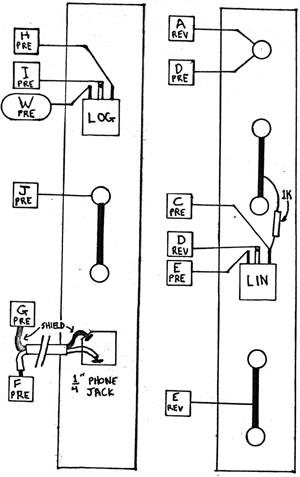

PREAMP/REVERB
This module uses two PC boards, one REV board and one PRE board which has a stick-on label 1 .
Refer to the accompanying instruction sheet for mounting and wiring the reverb spring assembly. The shielded wire connecting the phone jack to the PREAMP should be carefully stripped and soldered to avoid shorts or damage to the wire. The shield solder point, if kept short can provide a mechanical support to keep the strands from shorting against other conductors, and to keep the center conductor from too much stress. NOTE: The PREAMP is specifically designed for use with low impedance sources (less than 2000 ohms). SELF TEST- PROCEDURE After a11 of the wiring is completed and the reverb spring-assembly is mounted and connected to the PC board, apply an audio signal with a short envelope to the REVERB input. Reverberation should be evident at the output. The MIX pot should vary the proportion of original signal to reverb signal at the MIX output. Connect a low level unbalanced source such as amicrophone to the input. Increase the gain control pot for proper signal level at the PreAmp output.
|